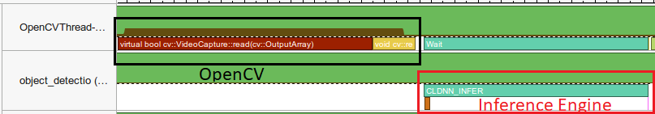
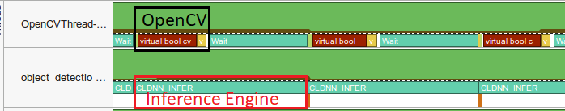
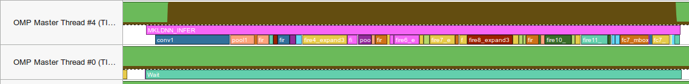
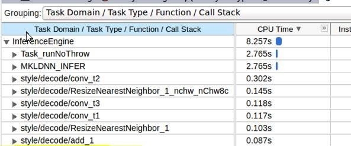

Introduction
The purpose of this document is to give you performance-related insights to every step of the network deployment process.
For information on the general workflow, refer to the documentation in See Also. For an example Inference Engine API snippet, see Request-Based API and “GetBlob” Idiom.
Deep Learning Inference Engine Overview
Deep Learning Inference Engine is a part of Intel® Deep Learning Deployment Toolkit (Intel® DL Deployment Toolkit) and OpenVINO™ toolkit. Inference Engine facilitates deployment of deep learning solutions by delivering a unified, device-agnostic API.
Below, there are the three main steps of the deployment process:
- Conversion
Trained models are converted from a specific framework (like Caffe* or TensorFlow*) to a framework-agnostic Intermediate Representation (IR) format.- Performance flow: This is an offline step where general topology-level optimizations happen automatically (see Model Optimizer Knobs Related to Performance).
- Tools: Intel DL Deployment Toolkit features the Model Optimizer that enables automatic and seamless transition from the training environment to the deployment environment.
- Model Inference/Execution
After conversion, Inference Engine consumes the IR to perform inference. While Inference Engine API itself is target-agnostic, internally, it has a notion of plugins, which are device-specific libraries facilitating the hardware-assisted acceleration.- Performance flow: Upon conversion to IR, the execution starts with existing Inference Engine samples to measure and tweak the performance of the network on different devices.
> NOTE: While consuming the same IR, each plugin performs additional device-specific optimizations at load time, so the resulting accuracy might differ. Also, enabling and optimizing custom kernels is error-prone (see Optimizing Custom Kernels). - Tools: Beyond inference performance that samples report (see Latency vs. Throughput), you can get further device- and kernel-level timing with the Inference Engine performance counters and Intel® VTune™.
- Performance flow: Upon conversion to IR, the execution starts with existing Inference Engine samples to measure and tweak the performance of the network on different devices.
- Integration to the product
After model inference is verified with the samples, the Inference Engine code is typically integrated into a real application or pipeline.- Performance flow: The most important point is to preserve the sustained performance achieved with the stand-alone model execution. Take precautions when combining with other APIs and be careful testing the performance of every integration step.
- Tools: Beyond tracking the actual wall-clock time of your application, see Intel® VTune™ Examples for application-level and system-level information.
Gathering the Performance Numbers
Performance data comes in a variety of forms. For example, one of the the most common performance metrics is latency, which represents the time required to complete a unit of work (for instance, inference time for a single image). In the following sections, you will see important recommendations for measuring the performance.
Measure the Proper Set of Operations
When evaluating performance of your model with the Inference Engine, you must measure the proper set of operations. To do so, consider the following tips:
- Avoid including one-time costs like model loading. For examples, refer to the Inference Engine samples.
- Track separately the operations that happen outside the Inference Engine, like video decoding.
NOTE: Some image pre-processing can be baked into the IR and accelerated. For more information, refer to Model Optimizer Knobs Related to Performance.
Latency vs. Throughput
In the asynchronous case (see Request-Based API and “GetBlob” Idiom), the performance of an individual infer request is usually of less concern. Instead, you typically execute multiple requests asynchronously and measure the throughput in images per second by dividing the number of images that were processed by the processing time. In contrast, for the latency-oriented tasks, the time to a single frame is more important.
Refer to the Benchmark App sample, which allows latency vs. throughput measuring.
NOTE: Most samples also support batching (automatically packing multiple input images into a single request). However, high batch size results in a latency penalty. So for more real-time oriented usages, lower batch sizes (as low as a single input) are usually used. However, devices like CPU, Intel® Movidius™ Myriad™ 2 VPU, Intel® Movidius™ Myriad™ X VPU, or Intel® Vision Accelerator Design with Intel® Movidius™ VPU require a number of parallel requests instead of batching to leverage the performance.
Comparing Performance with Native/Framework Code
When comparing the Inference Engine performance with the framework or another reference code, make sure that both versions are as similar as possible:
- Wrap exactly the inference execution (refer to the Inference Engine Samples for examples).
- Do not include model loading time.
- Ensure the inputs are identical for the Inference Engine and the framework. For example, Caffe* allows to auto-populate the input with random values. Notice that it might give different performance than on real images.
- Similarly, for correct performance comparison, make sure the access pattern, for example, input layouts, is optimal for Inference Engine (currently, it is NCHW).
- Any user-side pre-processing should be tracked separately.
- Make sure to try the same environment settings that the framework developers recommend, for example, for TensorFlow*. In many cases, things that are more machine friendly, like respecting NUMA (see CPU Checklist), might work well for the Inference Engine as well.
- If applicable, use batching with the Inference Engine.
- If possible, demand the same accuracy. For example, TensorFlow allows
FP16support, so when comparing to that, make sure to test the Inference Engine with theFP16as well.
Getting Credible Performance Numbers
You need to build your performance conclusions on reproducible data. Do the performance measurements with a large number of invocations of the same routine. Since the first iteration is almost always significantly slower than the subsequent ones, you can use an aggregated value for the execution time for final projections:
- If the warm-up run does not help or execution time still varies, you can try running a large number of iterations and then average or find a mean of the results.
- For time values that range too much, use geomean.
Refer to the Inference Engine Samples for code examples for the performance measurements. Almost every sample, except interactive demos, has a -ni option to specify the number of iterations.
Model Optimizer Knobs Related to Performance
Networks training is typically done on high-end data centers, using popular training frameworks like Caffe*, TensorFlow*, and MXNet*. Model Optimizer converts the trained model in original proprietary formats to IR that describes the topology. IR is accompanied by a binary file with weights. These files in turn are consumed by the Inference Engine and used for scoring.

As described in the Model Optimizer Guide, there are a number of device-agnostic optimizations the tool performs. For example, certain primitives like linear operations (BatchNorm and ScaleShift), are automatically fused into convolutions. Generally, these layers should not be manifested in the resulting IR:
The picture above shows Caffe* Resnet269* topology. The left model is the original model, and the one on the right (after conversion) is the resulting model that the Model Optimizer produces, with BatchNorm and ScaleShift layers fused into the convolution weights rather than constituting separate layers.
If you still see these operations, inspect the Model Optimizer output carefully while searching for warnings, such as on the tool being unable to fuse. For example, non-linear operations (like activations) in between convolutions and linear operations might prevent the fusing. If performance is of concern, try to change (and potentially re-train) the topology. Refer to the Model Optimizer Guide for more optimizations.
Notice that the activation (_relu) is not touched by the Model Optimizer, and while it can be merged into convolution as well, this is rather a device-specific optimization, covered by Inference Engine during the model loading time. You are encouraged to inspect performance counters from plugins that should indicate that these particular layers are not executed (“Optimized out”). For more information, refer to Internal Inference Performance Counters.
Also:
- Image mean/scale parameters
Make sure to use the input image mean/scale parameters (--scaleand–mean_values) with the Model Optimizer when you need pre-processing. It allows the tool to bake the pre-processing into the IR to get accelerated by the Inference Engine. - RGB vs. BGR inputs
If, for example, your network assumes the RGB inputs, the Model Optimizer can swap the channels in the first convolution using the--reverse_input_channelscommand line option, so you do not need to convert your inputs to RGB every time you get the BGR image, for example, from OpenCV*. - Larger batch size
Notice that the devices like GPU are doing better with larger batch size. While it is possible to set the batch size in the runtime using the Inference Engine ShapeInference feature. - Resulting IR precision
The resulting IR precision, for instance,FP16orFP32, directly affects performance. As CPU now supportsFP16(while internally upscaling toFP32anyway) and because this is the best precision for a GPU target, you may want to always convert models toFP16. Notice that this is the only precision that Intel® Movidius™ Myriad™ 2 and Intel® Myriad™ X VPUs support.
Device-Specific Optimizations
The Inference Engine supports several target devices (CPU, GPU, Intel® Movidius™ Myriad™ 2 VPU, Intel® Movidius™ Myriad™ X VPU, Intel® Vision Accelerator Design with Intel® Movidius™ Vision Processing Units (VPU) and FPGA), and each of them has a corresponding plugin. If you want to optimize a specific device, you must keep in mind the following tips to increase the performance.
CPU Checklist
CPU plugin completely relies on the Intel® Math Kernel Library for Deep Neural Networks (Intel® MKL-DNN) for major primitives acceleration, for example, Convolutions or FullyConnected.
The only hint you can get from that is how the major primitives are accelerated (and you cannot change this). For example, on the Core machines, you should see variations of the jit_avx2 when inspecting the internal inference performance counters (and additional '_int8' postfix for int8 inference). If you are an advanced user, you can further trace the CPU execution with (see Intel® VTune™).
Internally, the Inference Engine has a threading abstraction level, which allows for compiling the open source version with either Intel® Threading Building Blocks (Intel® TBB) which is now default, or OpenMP* as an alternative parallelism solution. When using inference on the CPU, this is particularly important to align threading model with the rest of your application (and any third-party libraries that you use) to avoid oversubscription. For more information, see Note on the App-Level Threading section.
Since R1 2019, the OpenVINO™ toolkit comes pre-compiled with Intel TBB, so any OpenMP* API or environment settings (like OMP_NUM_THREADS) has no effect anymore. Certain tweaks (like number of threads used for inference on the CPU) are still possible via CPU configuration options.
Other general recommendations:
- Usually, batching improves CPU performance. However, the need to gather frames in the batch might complicate the application logic. Instead, you can keep a separate infer request per camera or other source of input and process the requests in parallel. For more information, see the next section.
- If your application simultaneously performs inference of multiple models on the same CPU, make sure you do not oversubscribe the machine. See Performance Aspects of Running Multiple Requests Simultaneously for more information.
- Notice that the heterogeneous execution might implicitly load the CPU. For details, refer to the Heterogeneity section.
- Consider 8-bit integer inference on the CPU.
Throughput Mode for CPU
Unlike most accelerators, CPU is perceived as an inherently latency-oriented device. In fact, the OpenVINO does support the "throughput" mode for the CPU, which allows the Inference Engine to efficiently run multiple inference requests on the CPU simultaneously, greatly improving the overall throughput.
Internally, the execution resources are split/pinned into execution "streams". This feature usually provides much better performance for the networks than batching. This is especially pronounced for the many-core server machines.
Try the Benchmark App sample and play with number of streams running in parallel. The rule of thumb is tying up to a number of CPU cores on your machine. For example, on an 8-core CPU, compare the -nstreams 1 (which is a legacy, latency-oriented scenario) to the 2, 4, and 8 streams.
In addition, you can play with the batch size to find the throughput sweet spot.
If your application is hard or impossible to change in accordance with the multiple-requests logic, consider the "multiple-instance" trick to improve the throughput:
- For multi-socket execution, it is recommended to set `KEY_CPU_THREADS_NUM` to the number of cores per socket, and run as many instances of the application as you have sockets.
- Similarly, for extremely lightweight networks (running faster than 1ms) and/or many-core machines (16+ cores), try limiting the number of CPU inference threads to just
#physcores and further, while trying to saturate the machine with running multiple instances of the application.
GPU Checklist
Inference Engine relies on the Compute Library for Deep Neural Networks (clDNN) for Convolutional Neural Networks acceleration on Intel® GPUs. Internally, clDNN uses OpenCL™ to implement the kernels. Thus, many general tips apply:
- Prefer
FP16overFP32, as the Model Optimizer can generate both variants and theFP32is default. - Try to group individual infer jobs by using batches.
- Notice that using the GPU introduces one-time overhead (order of few seconds) of compiling the OpenCL kernels. The compilation happens upon loading the network to the GPU plugin and does not affect the inference time.
- If your application is simultaneously using the inference on the CPU or otherwise loads the host heavily, make sure that the OpenCL driver threads do not starve. You can use CPU configuration options to limit number of inference threads for the CPU plugin.
- In the GPU-only scenario, a GPU driver might occupy a CPU core with spin-looped polling for completion. If the CPU utilization is a concern, consider the
KEY_CLDND_PLUGIN_THROTTLEconfiguration option.
NOTE: See the Benchmark App Sample code for a usage example.
Notice that while disabling the polling, this option might reduce the GPU performance, so usually this option is used with multiple GPU streams.
Intel® Movidius™ Myriad™ X Visual Processing Unit and Intel® Vision Accelerator Design with Intel® Movidius™ VPUs
Since Intel® Movidius™ Myriad™ X Visual Processing Unit (Intel® Movidius™ Myriad™ 2 VPU) communicates with the host over USB, minimum four infer requests in flight are recommended to hide the data transfer costs. See Request-Based API and “GetBlob” Idiom and Benchmark App Sample for more information.
Intel® Vision Accelerator Design with Intel® Movidius™ VPUs requires to keep at least 32 inference requests in flight to fully saturate the device.
FPGA
Below are listed the most important tips for the efficient usage of the FPGA:
- Just like for the Intel® Movidius™ Myriad™ VPU flavors, for the FPGA, it is important to hide the communication overheads by running multiple inference requests in parallel. For examples, refer to the Benchmark App Sample.
- Since the first inference iteration with FPGA is always significantly slower than the subsequent ones, make sure you run multiple iterations (all samples, except GUI-based demos, have the
-nior 'niter' option to do that). - FPGA performance heavily depends on the bitstream.
- Number of the infer request per executable network is limited to five, so “channel” parallelism (keeping individual infer request per camera/video input) would not work beyond five inputs. Instead, you need to mux the inputs into some queue that will internally use a pool of (5) requests.
- In most scenarios, the FPGA acceleration is leveraged through heterogeneous execution with further specific tips.
- For multi-device FPGA execution please refer to the FPGA plugin documentation
Heterogeneity
Heterogeneous execution (constituted by the dedicated Inference Engine “Hetero” plugin) enables to schedule a network inference to the multiple devices.
Typical Heterogeneous Scenarios of Concern
The primary points for executing a network in heterogeneous mode are as follows:
- Calculate the heaviest pieces of the network with an accelerator while falling back to the CPU for the layers that are not supported by the accelerator.
This is particularly useful when certain custom (user) kernels are implemented only for the CPU (and much harder or even impossible to implement for the accelerator). - Use all available compute devices more efficiently, for example, by running branches of the network on the different devices.
Heterogeneous Flow
The execution through heterogeneous plugin has three distinct steps:
- Applying affinity setting for the layers, that is, binding them to the devices.
- This can be done automatically using fallback priorities, or on the per-layer basis.
- The affinity setting is made before loading the network to the (heterogeneous) plugin, so this is always a static setup with respect to execution.
- Loading a network to the heterogeneous plugin, which internally splits the network into subgraphs.
You can check the decisions the plugin makes, see Analysing the Heterogeneous Execution. - Executing the infer requests. From user’s side, this looks identical to a single-device case, while internally, the subgraphs are executed by actual plugins/devices.
Performance benefits of the heterogeneous execution depend heavily on the communications granularity between devices. If transmitting/converting data from one part device to another takes more time than the execution, the heterogeneous approach makes little or no sense. Using Intel® VTune™ helps to visualize the execution flow on a timeline (see Intel® VTune™ Examples).
Similarly, if there are too much subgraphs, the synchronization and data transfers might eat the entire performance. In some cases, you can define the (coarser) affinity manually to avoid sending data back and forth many times during one inference.
The general affinity “rule of thumb” is to keep computationally-intensive kernels on the accelerator, and "glue" or helper kernels on the CPU. Notice that this includes the granularity considerations. For example, running some custom activation (that comes after every accelerator-equipped convolution) on the CPU might result in performance degradation due to too much data type and/or layout conversions, even though the activation itself can be extremely fast. In this case, it might make sense to consider implementing the kernel for the accelerator (see Optimizing Custom Kernels). The conversions typically manifest themselves as outstanding (comparing to CPU-only execution) 'Reorder' entries (see Internal Inference Performance Counters).
For general details on the heterogeneous plugin, refer to the corresponding section in the Inference Engine Developer Guide.
Trying the Heterogeneous Plugin with Inference Engine Samples
Every Inference Engine sample supports the -d (device) option.
For example, here is a command to run an Object Detection Sample SSD Sample:
where:
HETEROstands for Heterogeneous plugin.FPGA,CPUpoints to fallback policy with first priority on FPGA and further fallback to CPU.
You can point more than two devices: -d HETERO:FPGA,GPU,CPU.
Heterogeneous Scenarios with FPGA
As FPGA is considered as an inference accelerator, most performance issues are related to the fact that due to the fallback, the CPU can be still used quite heavily.
- Yet in most cases, the CPU does only small/lightweight layers, for example, post-processing (
SoftMaxin most classification models orDetectionOutputin the SSD*-based topologies). In that case, limiting the number of CPU threads with `KEY_CPU_THREADS_NUM` config would further reduce the CPU utilization without significantly degrading the overall performance. - Also, if you are still using OpenVINO version earlier than R1 2019, or if you have recompiled the Inference Engine with OpemMP (say for backward compatibility), setting the
KMP_BLOCKTIMEenvironment variable to something less than default 200ms (we suggest 1ms) is particularly helpful. UseKMP_BLOCKTIME=0if the CPU subgraph is small.
NOTE: General threading tips (see Note on the App-Level Threading) apply well, even when the entire topology fits the FPGA, because there is still a host-side code for data pre- and post-processing.
General Tips on GPU/CPU Execution
The following tips are provided to give general guidance on optimizing execution on GPU/CPU devices.
- Generally, GPU performance is better on heavy kernels (like Convolutions) and large inputs. So if the network inference time is already too small (~1ms of execution time), using the GPU would unlikely give a boost.
- A typical strategy to start with is to test the CPU-only and GPU-only scenarios first (with samples this is plain
-d CPUor-d GPU). If there are specific kernels that are not supported by the GPU, the best option to try is theHETERO:GPU,CPUthat automatically applies default splitting (based on the plugins layers support). Then, you can play with the manual affinity settings (for example, to further minimize the number of subgraphs). - The general affinity “rule of thumb” is to keep computationally-intensive kernels on the accelerator, and "glue" (or helper) kernels on the CPU. Notice that this includes the granularity considerations. For example, running some (custom) activation on the CPU would result in too many conversions.
- It is advised to do performance analysis to determine “hotspot” kernels, which should be the first candidates for offloading. At the same time, it is often more efficient to offload some reasonably sized sequence of kernels, rather than individual kernels, to minimize scheduling and other run-time overheads.
- Notice that GPU can be busy with other tasks (like rendering). Similarly, the CPU can be in charge for the general OS routines and other application threads (see Note on the App-Level Threading). Also, a high interrupt rate due to many subgraphs can raise the frequency of the one device and drag the frequency of another down.
- Device performance can be affected by dynamic frequency scaling. For example, running long kernels on both devices simultaneously might eventually result in one or both devices stopping use of the Intel® Turbo Boost Technology. This might result in overall performance decrease, even comparing to single-device scenario.
- Mixing the
FP16(GPU) andFP32(CPU) execution results in conversions and, thus, performance issues. If you are seeing a lot of heavy outstanding (compared to the CPU-only execution) Reorders, consider implementing actual GPU kernels. Refer to Internal Inference Performance Counters for more information.
Analyzing Heterogeneous Execution
There is a dedicated configuration option that enables dumping the visualization of the subgraphs created by the heterogeneous plugin:
After enabling the configuration key, the heterogeneous plugin generates two files:
hetero_affinity.dot- per-layer affinities. This file is generated only if default fallback policy was executed (as otherwise you have set the affinities by yourself, so you know them).hetero_subgraphs.dot- affinities per sub-graph. This file is written to the disk during execution ofICNNNetwork::LoadNetworkfor the heterogeneous plugin.
You can use GraphViz* utility or *.dot converters (for example, to .png or .pdf), like xdot*, available on Linux* OS with sudo apt-get install xdot. Below is an example of the output trimmed to the two last layers (one executed on the FPGA and another on the CPU):
You can also use performance data (in samples, it is an option -pc) to get performance data on each subgraph. Refer to Internal Inference Performance Counters for more information.
Optimizing Custom Kernels
Few Initial Performance Considerations
Today, the Inference Engine supports only CPU and GPU custom kernels. Typically, custom kernels are used to quickly implement missing layers for new topologies. You should not override standard layers implementation, especially on the critical path, for example, Convolutions. Also, overriding existing layers can disable some existing performance optimizations, such as fusing.
It is usually easier to start with the CPU extension and switch to the GPU after debugging with the CPU path. Sometimes, when the custom layers are at the very end of your pipeline, it is easier to implement them as regular post-processing in your application without wrapping them as kernels. This is particularly true for the kernels that do not fit the GPU well, for example, output bounding boxes sorting. In many cases, you can do such post-processing on the CPU.
There are many cases when sequence of the custom kernels can be implemented as a “super” kernel allowing to save on data accesses.
Finally, with the heterogeneous execution, it is possible to execute the vast majority of intensive computations with the accelerator and keep the custom pieces on the CPU. The tradeoff is granularity/costs of communication between different devices.
For more details on the API of the custom layers, see Custom Layers Support in Inference Engine
Understanding Performance Contribution of Your Custom Kernels
In most cases, before actually implementing a full-blown code for the kernel, you can estimate the final performance by doing a simple stub kernel that does nothing (and thus is "infinitely" fast) just to let the topology execute end-to-end. Of course, the estimation is valid only if the kernel output does not affect the performance, for instance, if its output is not driving any branches or loops.
Other than that, when implementing the kernels, you can try the methods from the previous chapter to understand actual contribution and, if any custom kernel is in the hotspots, optimize that.
Few Device-Specific Tips
- As already outlined in the CPU Checklist, align the threading model that you use in your CPU kernels with the model that the rest of the Inference Engine compiled with.
- For CPU extensions, consider kernel flavor that supports blocked layout, if your kernel is in the hotspots (see Internal Inference Performance Counters). Since Intel MKL-DNN internally operates on the blocked layouts, this would save you a data packing (Reorder) on tensor inputs/outputs of your kernel. For example of the blocked layout support, please, refer to the extensions in the
<OPENVINO_INSTALL_DIR>/deployment_tools/samples/extension/.
Plugging Inference Engine to Applications
Note on the App-Level Threading
- As explained in the CPU Checklist section, by default the Inference Engine uses Intel TBB as a parallel engine. Thus, any OpenVINO-internal threading (including CPU inference) uses the same threads pool, provided by the TBB. But there are also other threads in your application, so oversubscription is possible at the application level:
- The rule of thumb is that you should try to have the overall number of active threads in your application equal to the number of cores in your machine. Keep in mind the spare core(s) that the OpenCL driver under the GPU plugin might also need.
- One specific workaround to limit the number of threads for the Inference Engine is using the CPU configuration options.
- To avoid further oversubscription, use the same threading model in all modules/libraries that your application uses. Notice that third party components might bring their own threading. For example, using Inference Engine which is now compiled with the TBB by default might lead to performance troubles when mixed in the same app with another computationally-intensive library, but compiled with OpenMP. You can try to compile the open source version of the Inference Engine to use the OpenMP as well. But notice that in general, the TBB offers much better composability, than other threading solutions.
- If your code (or third party libraries) uses GNU OpenMP, the Intel® OpenMP (if you have recompiled Inference Engine with that) must be initialized first. This can be achieved by linking your application with the Intel OpenMP instead of GNU OpenMP, or using
LD_PRELOADon Linux* OS.
Letting the Inference Engine Accelerate Image Pre-processing/Conversion
In many cases, a network expects a pre-processed image, so make sure you do not perform unnecessary steps in your code:
- Model Optimizer can efficiently bake the mean and normalization (scale) values into the model (for example, weights of the first convolution). See Model Optimizer Knobs Related to Performance.
- If regular 8-bit per channel images are your native media (for instance, decoded frames), do not convert to the
FP32on your side, as this is something that plugins can accelerate. Use theInferenceEngine::Precision::U8as your input format:
InferenceEngine::InputsDataMap info(netReader.getNetwork().getInputsInfo());auto& inputInfoFirst = info.begin()->second;info->setInputPrecision(Precision::U8);
Notice that in many cases, you can directly share the (input) data with the Inference Engine.
Basic Interoperability with Other APIs
The general approach for sharing data between Inference Engine and media/graphics APIs like Intel® Media Server Studio (Intel® MSS) is based on sharing the system memory. That is, in your code, you should map or copy the data from the API to the CPU address space first.
For Intel MSS, it is recommended to perform a viable pre-processing, for example, crop/resize, and then convert to RGB again with the Video Processing Procedures (VPP). Then lock the result and create an Inference Engine blob on top of that. The resulting pointer can be used for the SetBlob:
WARNING: The InferenceEngine::NHWC layout is not supported natively by most InferenceEngine plugins so internal conversion might happen.
Alternatively, you can use RGBP (planar RGB) output from Intel MSS. This allows to wrap the (locked) result as regular NCHW which is generally friendly for most plugins (unlike NHWC). Then you can use it with SetBlob just like in previous example:
The only downside of this approach is that VPP conversion to RGBP is not hardware accelerated (and performed on the GPU EUs). Also, it is available only on LInux.
OpenCV* Interoperability Example
Unlike APIs that use dedicated address space and/or special data layouts (for instance, compressed OpenGL* textures), regular OpenCV data objects like cv::Mat reside in the conventional system memory. That is, the memory can be actually shared with the Inference Engine and only data ownership to be transferred.
Again, if the OpenCV and Inference Engine layouts match, the data can be wrapped as Inference Engine (input/output) blob. Notice that by default, Inference Engine accepts the planar and not interleaved inputs in NCHW, so the NHWC (which is exactly the interleaved layout) should be specified explicitly:
WARNING: The InferenceEngine::NHWC layout is not supported natively by most InferenceEngine plugins so internal conversion might happen.
Notice that original cv::Mat/blobs cannot be used simultaneously by the application and the Inference Engine. Alternatively, the data that the pointer references to can be copied to unlock the original data and return ownership to the original API.
Request-Based API and “GetBlob” Idiom
Infer Request based API offers two types of request: Sync and Async. The Sync is considered below. The Async splits (synchronous) Infer into StartAsync and Wait (see Inference Engine Async API).
More importantly, an infer request encapsulates the reference to the “executable” network and actual inputs/outputs. Now, when you load the network to the plugin, you get a reference to the executable network (you may consider that as a queue). Actual infer requests are created by the executable network:
GetBlob is a recommend way to communicate with the network, as it internally allocates the data with right padding/alignment for the device. For example, the GPU inputs/outputs blobs are mapped to the host (which is fast) if the GetBlob is used. But if you called the SetBlob, the copy (from/to the blob you have set) into the internal GPU plugin structures will happen.
Performance Aspects of Running Multiple Requests Simultaneously
If your application simultaneously executes multiple infer requests:
- For the CPU, the best solution, you can use the CPU "throughput" mode.
- If latency is of more concern, you can try the
EXCLUSIVE_ASYNC_REQUESTSconfiguration option that limits the number of the simultaneously executed requests for all (executable) networks that share the specific device to just one:
```cpp //these two networks go thru same plugin (aka device) and their requests will not overlap. auto executable_network0 = plugin.LoadNetwork(network0, {{PluginConfigParams::KEY_EXCLUSIVE_ASYNC_REQUESTS, PluginConfigParams::YES}}); auto executable_network1 = plugin.LoadNetwork(network1, {{PluginConfigParams::KEY_EXCLUSIVE_ASYNC_REQUESTS, PluginConfigParams::YES}}); ```
For more information on the executable networks notation, see Request-Based API and “GetBlob” Idiom. - The heterogeneous device uses the
EXCLUSIVE_ASYNC_REQUESTSby default. KEY_EXCLUSIVE_ASYNC_REQUESTSoption affects only device queues of the individual application.
- If latency is of more concern, you can try the
- For FPGA and GPU, the actual work is serialized by a plugin and/or a driver anyway.
- Finally, for any VPU flavor, using multiple requests is a must for achieving good throughput.
In the Inference Engine, there is no notion of requests priorities. It is left to the user side (for example, not queuing the low priority infer request, until another higher priority is waiting). Notice that it would require additional logic to synchronize between executable networks (queues) in your application code.
Inference Engine Async API
Inference Engine Async API can improve overall frame rate of the application. While accelerator is busy with the inference, the application can continue doing things on the host rather than wait for the inference to complete.
In the example below, inference is applied to the results of the video decoding. So it is possible to keep two parallel infer requests, and while the current is processed, the input frame for the next is being captured. This essentially hides the latency of capturing, so that the overall frame rate is rather determined only by the slowest part of the pipeline (decoding IR inference) and not by the sum of the stages.
You can compare the pseudo-codes for the regular and async-based approaches:
- In the regular way, the frame is captured with OpenCV and then immediately processed:
while(…) {capture framepopulate CURRENT InferRequestInfer CURRENT InferRequest //this call is synchronousdisplay CURRENT result}Intel® VTune™ screenshot - In the "true" async mode, the
NEXTrequest is populated in the main (application) thread, while theCURRENTrequest is processed:
while(…) {capture framepopulate NEXT InferRequeststart NEXT InferRequest //this call is async and returns immediatelywait for the CURRENT InferRequest //processed in a dedicated threaddisplay CURRENT resultswap CURRENT and NEXT InferRequests}The technique can be generalized to any available parallel slack. For example, you can do inference and simultaneously encode the resulting or previous frames or run further inference, like emotion detection on top of the face detection results.Intel® VTune™ screenshot
There are important performance caveats though: for example, the tasks that run in parallel should try to avoid oversubscribing the shared compute resources. If the inference is performed on the FPGA and the CPU is essentially idle, it makes sense to do things on the CPU in parallel. However, multiple infer requests can oversubscribe that. Notice that heterogeneous execution can implicitly use the CPU, refer to Heterogeneity.
Also, if the inference is performed on the graphics processing unit (GPU), it can take little gain to do the encoding, for instance, of the resulting video, on the same GPU in parallel, because the device is already busy.
Refer to the Object Detection SSD Demo (latency-oriented Async API showcase) and Benchmark App Sample (which has both latency and throughput-oriented modes) for complete examples of the Async API in action.
Using Tools
Whether you are tuning for the first time or doing advanced performance optimization, you need a a tool that provides accurate insights. Intel® VTune™ Amplifier gives you the tool to mine it and interpret the profiling data.
Alternatively, you can gather the raw profiling data that samples report, the second chapter provides example of how to interpret these.
Intel® VTune™ Examples
All major performance calls of the Inference Engine are instrumented with Instrumentation and Tracing Technology APIs. This allows viewing the Inference Engine calls on the Intel® VTune™ timelines and aggregations plus correlating them to the underlying APIs, like OpenCL. In turn, this enables careful per-layer execution breakdown.
When choosing the Analysis type in Intel® VTune™ Amplifier, make sure to select the Analyze user tasks, events, and counters option:
See the corresponding section in the Intel® VTune™ Amplifier User's Guide for details.
Example of Inference Engine calls:
On the Intel VTune Amplifier timeline. Notice that
Task_runNOThrowis an Async API wrapper and it is executed in a different thread and triggers the Intel MKL-DNN execution:In the Intel VTune Amplifier Top-down view, grouped by the Task Domain. Notice the
Task_runNoThrowandMKLDNN _INFERthat are bracketing the actual Intel MKL-DNN kernels execution:
Similarly, you can use any GPU analysis in the Intel VTune Amplifier and get general correlation with Inference Engine API as well as the execution breakdown for OpenCL kernels.
Just like with regular native application, further drill down in the counters is possible, however, this is mostly useful for optimizing custom kernels. Finally, with the Intel VTune Amplifier, the profiling is not limited to your user-level code (see the corresponding section in the Intel® VTune™ Amplifier User's Guide).
Internal Inference Performance Counters
Almost every sample (inspect command-line options for a specific sample with -h) supports a -pc command that outputs internal execution breakdown. Refer to the samples code for the actual Inference Engine API behind that.
Below is example of CPU plugin output for a network (since the device is CPU, the layers wall clock realTime and the cpu time are the same):
This contains layers name (as seen in IR), layers type and execution statistics. Notice the OPTIMIZED_OUT, which indicates that the particular activation was fused into adjacent convolution. Also, the unknown stays for the Inference Engine specific CPU (helper) primitives that are not part of the Intel MKL-DNN.
Notice that there are some helper layers in the CPU execution breakdown, which were not presented in the original topology. These are automatically added by the plugin. For example, the Reorder re-packs the Intel MKL-DNN internal (blocked) layout to the regular plain NCHW (that the user expects as the output). As explained in the Few Device-Specific Tips, if your custom kernels introduces a lot of outstanding/expensive Reorders, consider blocked implementation for the kernels.
Notice that in the heterogeneous cases, there will be additional information on which subgraph the statistics is about (the first subgraph is GPU, so its cpu/host time is really small compared to the actual realTime):
As mentioned earlier, unknown here means CPU kernel with unknown (for example, not AVX2 or AVX512) acceleration path. Since FPGA execution does not separate individual kernels, only bulk execution/data transfer statistics is available:
The softmax/copy is a glue layer that connects the FPGA subgraph to the CPU subgraph (and copies the data).